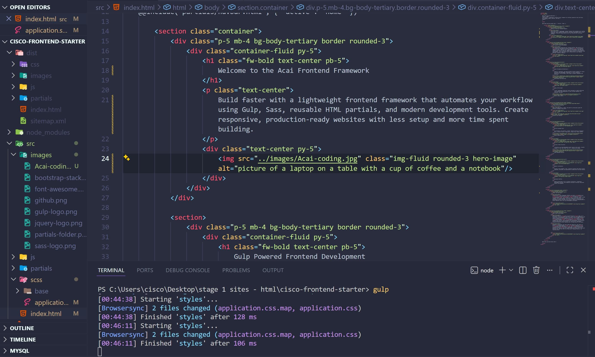
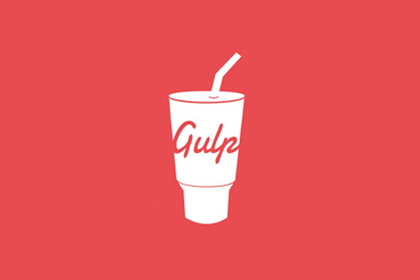
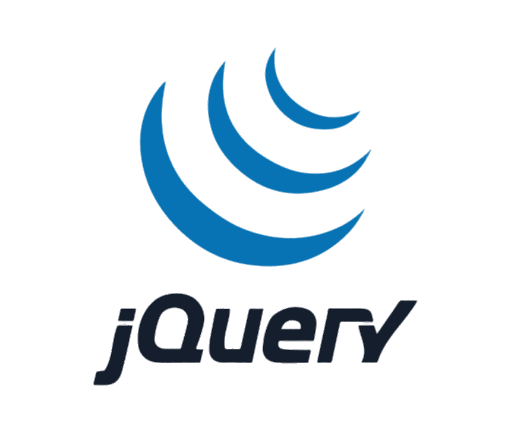
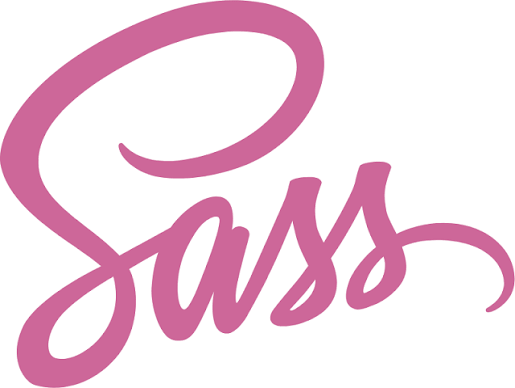
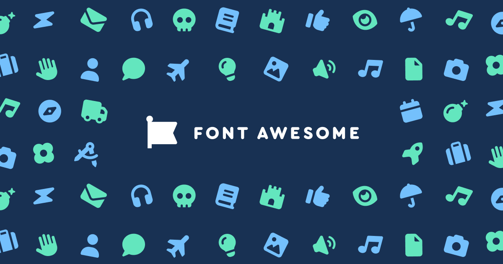
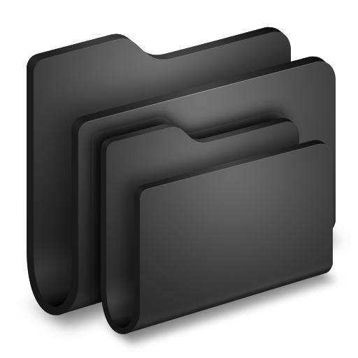

Welcome to the Acai Frontend Framework
Build faster with a lightweight frontend framework that automates your workflow using Gulp, Sass, reusable HTML partials, and modern development tools. Create responsive, production-ready websites with less setup and more time spent building.
Acai Framework

Gulp Powered Frontend Development
Stop wasting time configuring your frontend workflow. HTML Starter is a Gulp and npm-powered frontend framework that automates repetitive tasks, compiles assets, optimizes performance, and keeps your codebase organized from day one. Whether you're building static websites, landing pages, rapid prototypes, GitHub Pages projects, or production-ready applications, you'll spend less time on setup and more time shipping polished, responsive websites.


Comes Preloaded with Bootstrap 5
Powerful, extensible, and feature-packed frontend framework for faster and easier web development. Bootstrap 5 is fully responsive, mobile-first, and includes a wide range of prebuilt components and utilities.
Build Faster with Bootstrap
JQuery CDN Included
A fast, lightweight Javascript library designed to simplify HTML DOM tree traversal and manipulation, as well as event handling, CSS animation, and Ajax.
Explore jQuery BasicsA Simplified Sass Workflow
Sass is the most mature, stable, and powerful professional grade CSS extension language in the world.


Add Font Awesome Icons
The internet's icon library + toolkit. Used by millions of designers, devs, & content creators. Open-source. Always free. Always awesome.
Explore Beautiful Icons
Partials Folder Structure
a directory in a web development project used to store small, reusable snippets of HTML code rather than full, standalone web pages
Learn Reusable PartialsModular Architecture
Business travel demands a fast, responsive workflow that keeps projects organized, accessible, and optimized for productivity from any location.
Developer Workflow
Remote professionals rely on scalable architecture, streamlined development workflows, and responsive solutions to deliver consistent results from anywhere.
Prefer Your Own Stack?
Customization is your playground. Whether you prefer Bootstrap, Tailwind CSS, Foundation, Bulma, UIkit, or your own custom frontend framework, HTML Starter makes it easy to replace the default stack, configure your build settings, and create a responsive, production-ready development workflow tailored to your project. Explore the documentation to unlock complete control over your development environment.
Here's How To Get Started
Getting started with Acai Frontend Starter takes just a few minutes. Clone the GitHub repository, install the npm dependencies, and launch the Gulp development server to instantly access a modern frontend workflow powered by Bootstrap 5, Sass, Font Awesome, jQuery, BrowserSync, and reusable HTML partials. With automated asset optimization, live reloading, and SEO-ready project structure built in, you can start developing responsive websites without spending hours configuring your environment.
Designed for developers who value speed and simplicity, Acai helps you build landing pages, static websites, GitHub Pages deployments, and production-ready frontend projects using a lightweight, scalable architecture. Download the framework today and replace repetitive setup with an efficient workflow that lets you focus on writing code, shipping features, and launching faster.